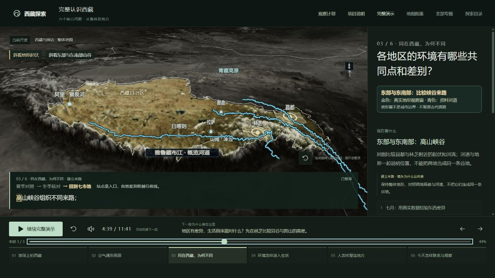
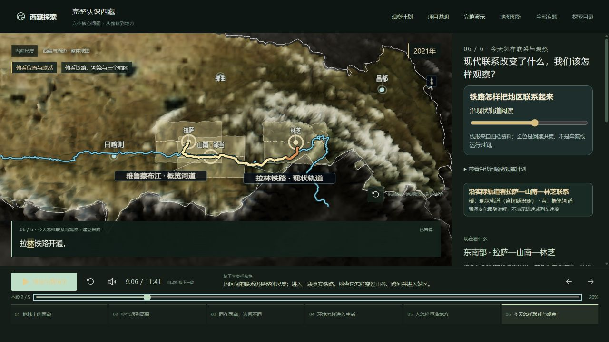

2026-10-18 · 画面表达专项 · 录音基线不变
讲到哪里，画面引导到哪里。
讲过程，必须有过程变化。
本次统一的是观察方式：整体定位 → 按问题选角度 → 当前对象优先 → 回到整体。不是给所有段落增加旋转、连线或模型。
六章按同一标准对照
| 章 | 已有画面能力 | 本次取舍与修正 | 边界 |
|---|---|---|---|
| 1 地球定位 | 地球逐层定位，自然高地与行政范围对照。 | 保留原连续镜头和定位演示，不重复叠加镜头控制。 | 本次核对实现及录音基线，未重做整章实播验收。 |
| 2 气流与地形 | 自转对照、亚洲来流、真实高程、抬升和水汽比较。 | 保留机制自己控制的镜头，区域读图规则不会抢走气团和云雨的视角。 | 气团、云雨是原理示意，不是实测风场或雨量。 |
| 3 地区差异 | 三站同尺度资料对照，七市地真实地形窗口。 | 原来同时强调七地，改为随原句依次强调南部三地、东部两地、北西部两地；南部俯看位置，山地斜看起伏，后两组保持同角度比较。 | 站点不能代表整个市域；窗口不代表行政边界。 |
| 4 环境与生活 | 整体进入地方剖面，狮泉河渠线与供水条件对照。 | 保留地面条件、设施、人的维护这一因果链；不以换角度替代开闭设施后的变化。 | 真实渠线与功能水量分开；并未测量当地家庭用水结果。 |
| 5 历史文化 | 整体进入拉萨场所；保护案例中供灯与木构分开，活动继续。 | 保留现有局部过程；共享标记规则优先突出正在讲的来源地点，仍回到整体。 | 托林交流主要是来源地点与事件定位，尚不是完整交流过程演示；现状轮廓不是古城复原。 |
| 6 联系与观察 | 桥梁开闭、轨道与道路接续、真实地面沿线观察、上下游阅读、计划保存返回。 | 通道用较高俯视；河流、羌塘、遗产分别按原句引导，不再共用一条含糊提示。旅游观察复用南部俯视、山地斜视，再回全域。河流移动说明避让固定河名。 | 干流次序不等于完整流域机制；具体草地管护仍未演出。不能据此宣布所有画面达标。 |
本次共同规则
- 换角度只改变观察视角，不改变高程、坐标或地形夸张比例；北向保持同侧，指南针随实际相机计算。
- 镜头、焦点、原有过程、字幕共用录音字时间。暂停不会继续转镜；倒退重建同一画面。已有地球、云雨和地方镜头保持自己的控制。
- 实播发现并修复：DEM加载和整体/局部高度比例切换时，地形窗、河道和交通带重新贴地，避免继续使用旧高度导致标记偏移。
- 金色圈为当前观察焦点，地形窗为读取范围；都不是行政界线或实际影响范围。河道和交通使用已归档几何，本次无新增地理事实、模型、录音和时长。
- 地图保留整体上下文，多个当前地点优先安排短名称；其他地区降为参照，避免所有对象同时抢重点。
验收与收口范围
检查原录音锚点、真实高程上的构图安全范围、逐词确定性、操作恢复与原固定基线。实际浏览器抽查地区分组、线路俯视、上下游、遗产与返回，不以程序测试代替看懂原因，也不把抽查称为整场重播。
原21段录音、701.424秒保持不变。工具没有系统声音回录，本次只能核对播放推进、可见字幕与画面，不能声称完成声音听审。正式首次观看者验收仍独立记录。
看本次实际画面

